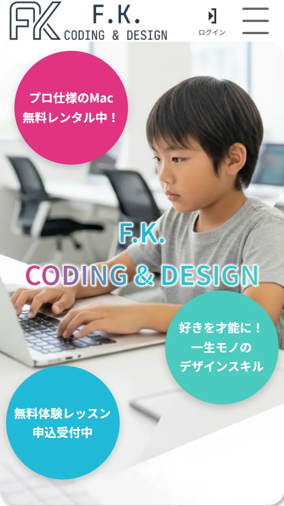

職業訓練学校の課題として制作したWeb初心者～中級者向けWebデザイン教室コーポレートサイト

概要
本作品は職業訓練校の課題として制作した、Web初心者から中級者を対象としたデザイン教室のコーポレートサイトです。
職業訓練学校の教師が用意した実在の案件に答える形式で、要件定義からデザイン設計、コーディングまでの一連の工程を単独で担当しました。
トップページに限定した制作ではありますが、ユーザーに対する訴求設計から実装までを一貫して行っています。
コンセプトには「消費する側から、創る側へ」を掲げ、保護者層に対する信頼感と、子どもたちが興味を持つ楽しさの両立を意識したUI設計を行いました。
また、職業訓練校の指導方針に基づき、要件整理・デザイン検討・実装補助などの各工程においてAIツールを活用し、効率化と品質向上を図っています。
課題と目的
想定クライアントの案件説明文を見て、以下の課題を設定しました。
- サービス内容が直感的に伝わらない
- Webデザイン教室に通う利点の提示
- 情報量増加による可読性の低下
これらを踏まえ、以下を目的として設計・制作を行いました。
- 視認性と情報整理を両立したレイアウト構築
- 案件説明文を精査した上での必要な情報の列挙
- 導線設計の最適化によるCTA到達率の向上
意識した点
① モバイルファースト設計
スマートフォンユーザーを前提とし、モバイルファーストで設計を行いました。
限られた画面内でも情報の優先順位が明確に伝わるよう、構造設計と余白設計に注力しています。
② 制作コストの削減
モバイルファーストで制作したものをPC画面でもそのまま中央配置で使うことで、制作コストを圧縮しています。
③ 親子ともに意識したデザイン設計
子どもに対しては明るく親しみやすい配色を採用し、Webになじみのない保護者に対してはより可読性の高いレイアウトと情報構造を意識しました。
④ 情報量制御とUIコンポーネント活用
カルーセル、アコーディオン、ハンバーガーメニューを活用し、情報量の増加による視認性低下を防ぎました。
必要な情報を必要なタイミングで提示する構造にすることで、ユーザー体験の向上を図っています。
⑤ CTAの挙動設計
CTAボタンは視認性だけでなく、ファーストビューでは表示せずスクロール開始時に表示され、footerの上でとどまるように設計しました。
制作期間
一か月
使用技術・使用ツール
【技術】
- HTML5
- CSS3
- JavaScript
【ツール】
- Figma
- Google font
- Photoshop
- Gemini
課題・改善点
初めて要件定義から制作を行ったため、ターゲット設定や要件整理に時間を要しました。
また、BEM設計の徹底が不十分であった点や、JavaScriptの実装をAIに依存していた点が課題として残っています。
今後に活かすこと
今後はBEMによるクラス設計を徹底し、保守性・拡張性の高いコーディングを実現していきます。
また、JavaScriptについても基礎から理解を深め、自力で設計・実装できるレベルまで習熟を目指します。
加えて、本作品はトップページのみの制作に留まっているため、下層ページの設計・実装まで行い、サイト全体としての完成度を高めていきたいと考えています。
画面キャプチャ